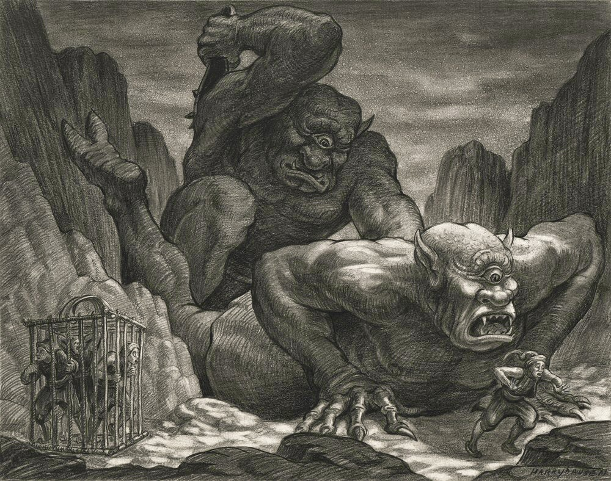
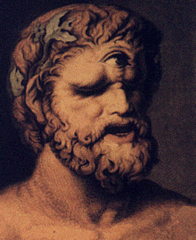

CiclopesOs Ciclopes, gigantes monstruosos, filhos de Netuno e de Anfitrite, e segundo outros, do Céu da Terra, só tinham um olho no meio da testa, onde vem o nome (Cuclos, circulo, ops, olhar). Eles viviam dos frutos da terra inculta, e do produto dos seus rebanhos; não eram governados por nenhuma lei. Muitos poetas os consideram como os primeiros habitantes da Siculia, e representam-nos como antropófagos. Apesar da sua crueldade ou barbaridade, os Ciclopes foram colocados entre os deuses; e em um templo de Corinto possuíam um altar sobre o qual lhes faziam sacrifícios. |
 |
|  |
OrigemEles aparecem em muitos mitos da Grécia, porém com uma origem bastante controversa. De acordo com sua origem, esses seres são organizados em três diferentes espécies: os urânios, filhos de Urano e Gaia, os sicilianos, filhos do deus dos mares Posídon, e os construtores, que provêm do território da Lícia. |